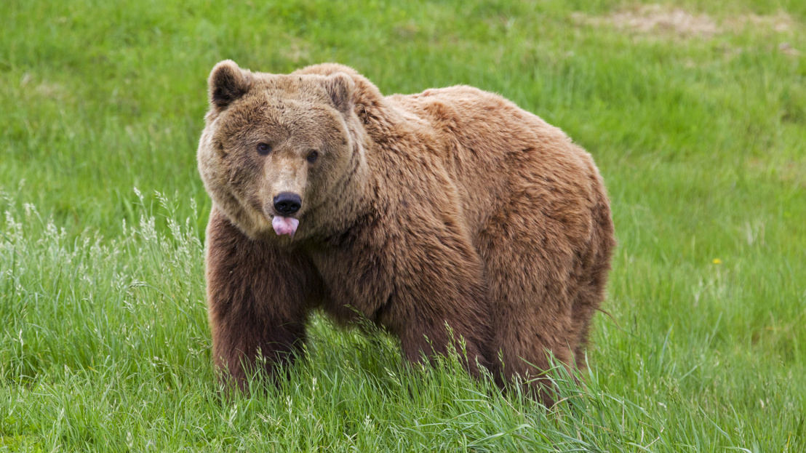

Tulajdonságok
1. Testfelépítés
Nagy, robusztus test Erős vállizomzat (különösen a grizzlynél jól látható púp) Rövid, de nagyon erős lábak
2. Méret és tömeg
Hímek nagyobbak, mint a nőstények Európában: 100–250 kg Észak-Amerikában: 150–300 kg Kodiak-medve: akár 600–700 kg Testhossz: 1,2–2,8 m
3. Érzékszervek
Kiváló szaglás – akár több km-ről megérzi az élelmet Jó hallás Látása közepes, de színt is érzékel
4. Téli álom
Nem valódi hibernáció: csak enyhe testhőcsökkenés Nem eszik, nem iszik, nem ürít Zsírból él Barlandban vagy üregben pihen 2–7 hónapig
5. Élettartam
Vadon: 20–30 év Fogságban: akár 40 év
